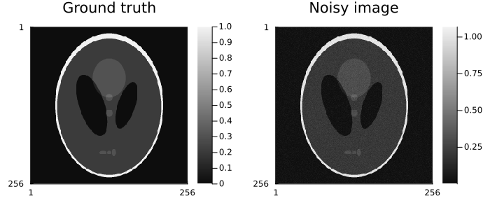
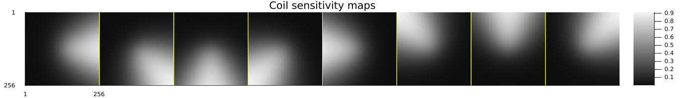
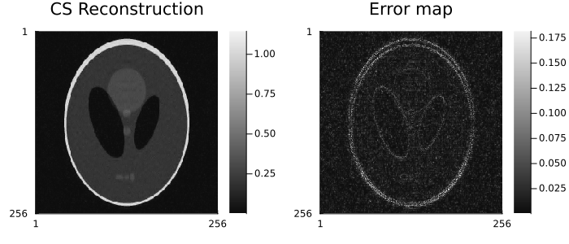
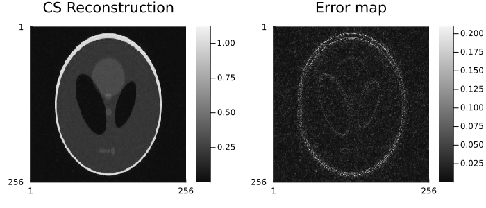

MriReconstructionToolbox.jl
A comprehensive Julia package for MRI reconstruction
MriReconstructionToolbox.jl provides everything you need to reconstruct images from MRI k-space data, from simple FFT-based reconstruction to advanced compressed sensing with sophisticated regularization.
Installation
Note: This package is not yet registered in the Julia General registry because it needs enhancements to upstream packages. These changes are currently under pull requests, and hopefully will be merged soon. Installation requires adding dependencies from GitHub repositories:
using Pkg
# Add the package from GitHub
Pkg.add(url="https://github.com/hakkelt/AbstractOperators.jl")
Pkg.add(url="https://github.com/hakkelt/AbstractOperators.jl", subdir="FFTWOperators")
Pkg.add(url="https://github.com/hakkelt/AbstractOperators.jl", subdir="DSPOperators")
Pkg.add(url="https://github.com/hakkelt/AbstractOperators.jl", subdir="NFFTOperators")
Pkg.add(url="https://github.com/hakkelt/AbstractOperators.jl", subdir="WaveletOperators")
Pkg.add(url="https://github.com/hakkelt/ProximalCore.jl")
Pkg.add(url="https://github.com/hakkelt/ProximalOperators.jl")
Pkg.add(url="https://github.com/hakkelt/ProximalAlgorithms.jl")
Pkg.add(url="https://github.com/hakkelt/StructuredOptimization.jl")
Pkg.add(url="https://github.com/hakkelt/MriReconstructionToolbox.jl")What This Package Does
MriReconstructionToolbox.jl solves the MRI reconstruction inverse problem:
Given: k-space measurements (undersampled, multi-coil)
Find: Image that best explains the measurementsThe package provides:
- Complete MRI Forward Model: Models the entire acquisition chain
- Flexible Regularization: Multiple methods for different image properties
- Efficient Algorithms: Many iterative solvers from ProximalAlgorithms.jl
- High-Level Interface: Simple
reconstruct()function for common tasks - Low-Level Control: Direct operator access for custom algorithms
Features
- ✅ Complete MRI Forward Model - Fourier transform + sensitivity maps + subsampling
- ✅ Parallel Imaging - Multi-coil reconstruction with sensitivity maps
- ✅ Compressed Sensing - Advanced undersampling and regularization
- ✅ Multiple Regularizers - Sparsity, wavelets, total variation, low-rank
- ✅ Fast Algorithms - FISTA, ADMM, Conjugate Gradient
- ✅ Auto-Parallelization - Automatic decomposition over batch dimensions
- ✅ Named Dimensions - Type-safe interface prevents dimension errors
- ✅ Simulation Tools - Built-in phantoms and sampling patterns
- ✅ High Performance - Multi-threaded FFTs and optimized operators
Quick Start
Simulation Example
Shepp-Logan Phantom and Noisy Observation
using MriReconstructionToolbox
using MIRTjim: jim
nx, ny, nc = 256, 256, 8
xᵍᵗ = shepp_logan(nx, ny)
noise_level = 0.03f0
x = xᵍᵗ + noise_level * randn(ComplexF32, nx, ny)
p1 = jim(xᵍᵗ; title = "Ground truth")
p2 = jim(x; title = "Noisy image")
jim(p1, p2; layout = (1, 2), size = (700, 300))
Coil Sensitivity Maps
smaps = coil_sensitivities(nx, ny, nc)
jim(smaps; title = "Coil sensitivity maps", nrow=1, size = (1400, 200))
k-space Undersampling Pattern
using Plots
pdf = VariableDensitySampling(PolynomialDistribution(3), 3.0, 0.1)
W = MriReconstructionToolbox.construct_weights(pdf, (nx,))
p1 = plot(W; title = "1D Sampling weights", legend = false)
pattern = create_sampling_pattern(pdf, (nx, ny))
p2 = jim(to_displayable_mask(pattern, (nx, ny)); title = "Sampling pattern")
jim(p1, p2; layout = (1, 2), size = (700, 300))
Simulation of Acquisition
# Create acquisition info that contains every knowledge about the acquisition, but no actual data yet
acq_info = AcquisitionInfo(
is3D=false,
image_size=(nx, ny),
subsampling=pattern,
sensitivity_maps=smaps)
# Simulate k-space acquisition
data = simulate_acquisition(x, acq_info)AcquisitionInfo:
- kspace data = Array{ComplexF32}<256×85×8>
- encoding = 2D
- image size = 256×256
- sensitivity maps = ComplexF32<256×256×8>
- subsampling = (:, Vector{Bool}<256>)Reconstruction Examples
Direct Reconstruction via Adjoint
x̂_direct = reconstruct(data)
p1 = jim(x̂_direct; title = "Direct reconstruction")
p2 = jim(abs.(x̂_direct - xᵍᵗ); title = "Error map")
jim(p1, p2; layout = (1, 2), size = (700, 300))Constructing encoding operator: 2.95 ms (25.18 M allocations: 24.010 MiB)
Reconstructing image: 7.27 ms (524.42 k allocations: 512.133 KiB)
Computing scaling factor: 3.5 ms (524.7 k allocations: 512.406 KiB)
Total time: 35.94 ms
Compressed Sensing Reconstruction with Wavelet Regularization
reg = L1Wavelet2D(0.01f0)
x̂_cs = reconstruct(data, reg; maxit=50)
p1 = jim(x̂_cs; title = "CS Reconstruction")
p2 = jim(abs.(x̂_cs - xᵍᵗ); title = "Error map")
jim(p1, p2; layout = (1, 2), size = (700, 300))Constructing encoding operator: 13.7 ms (33.57 M allocations: 32.011 MiB, 76.07% gc time)
Getting initial estimate: 4.88 ms (524.42 k allocations: 512.133 KiB)
Computing scaling factor: 3.37 ms (524.7 k allocations: 512.406 KiB)
Scaling k-space data: 858.73 µs (1.39 M allocations: 1.329 MiB)
Normalizing encoding operator: 130.11 ms (5.38 M allocations: 5.126 MiB)
Building optimization model: 5.98 ms (5.26 M allocations: 5.012 MiB)
Starting reconstructing image...
| f(x) | g(z) | ‖x - z‖/γ
------|-----------|-----------|-----------
5 | 2.058e+00 | 2.780e+01 | 1.927e-02
10 | 1.942e+00 | 2.706e+01 | 6.616e-03
15 | 1.923e+00 | 2.698e+01 | 5.269e-03
20 | 1.924e+00 | 2.697e+01 | 2.206e-03
25 | 1.926e+00 | 2.696e+01 | 1.174e-03
30 | 1.925e+00 | 2.696e+01 | 5.459e-04
35 | 1.925e+00 | 2.696e+01 | 5.562e-04
40 | 1.926e+00 | 2.696e+01 | 3.730e-04
45 | 1.926e+00 | 2.696e+01 | 1.417e-04
50 | 1.926e+00 | 2.696e+01 | 1.048e-04
Finished reconstructing image in 793.94 ms (79.34 M allocations: 75.667 MiB, 0.98% gc time, 9.03% compilation time)
Inverse scaling image: 84.27 µs (48 allocations: 48 bytes)
Total time: 999.68 ms
Custom Reconstruction With Low-Level Interface
# Prepare encoding operator
ℳ = get_subsampling_operator(data)
ℱ = get_fourier_operator(data)
𝒮 = get_sensitivity_map_operator(data)
𝒜 = ℳ * ℱ * 𝒮Π ℂ^(256, 256) -> ℂ^(256, 85, 8) # Get k-space data and direct reconstruction
b = data.kspace_data
x̂ = 𝒜' * b # direct reconstruction as adjoint operation
p1 = jim(x̂; title = "Direct reconstruction")
p2 = jim(abs.(x̂ - xᵍᵗ); title = "Error map")
jim(p1, p2; layout = (1, 2), size = (700, 300))
# Set up and solve custom optimization problem with StructuredOptimization.jl
v = Variable(x̂); # use direct reconstruction as initial guess
𝒲 = WaveletOp(ComplexF32, wavelet(WT.db4), (nx, ny))
alg = FISTA(maxit=50, verbose=true, freq=5)
x̂_custom, it = @minimize ls(𝒜 * v - b) + 0.01 * norm(𝒲 * v, 1) with alg
# Visualize results
println("Reconstruction completed in $it iterations.")
p1 = jim(~x̂_custom; title = "CS Reconstruction")
p2 = jim(abs.(~x̂_custom - xᵍᵗ); title = "Error map")
jim(p1, p2; layout = (1, 2), size = (700, 300)) | f(x) | g(z) | γ | ‖x - z‖/γ
------|-----------|-----------|-----------|-----------
5 | 2.777e+05 | 2.165e+01 | 1.004e+00 | 1.451e-02
10 | 2.213e+05 | 2.085e+01 | 1.004e+00 | 6.192e-03
15 | 2.168e+05 | 2.074e+01 | 1.004e+00 | 3.299e-03
20 | 2.169e+05 | 2.072e+01 | 1.004e+00 | 1.673e-03
25 | 2.174e+05 | 2.071e+01 | 1.004e+00 | 5.680e-04
30 | 2.173e+05 | 2.071e+01 | 1.004e+00 | 3.930e-04
35 | 2.173e+05 | 2.071e+01 | 1.004e+00 | 1.925e-04
40 | 2.172e+05 | 2.071e+01 | 5.019e-01 | 1.778e-04
45 | 2.173e+05 | 2.071e+01 | 3.137e-02 | 2.091e-04
50 | 2.173e+05 | 2.071e+01 | 3.137e-02 | 3.810e-04
Reconstruction completed in 50 iterations.